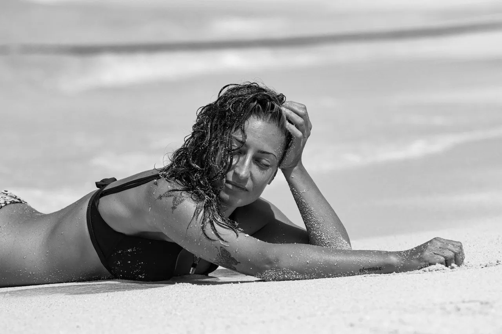
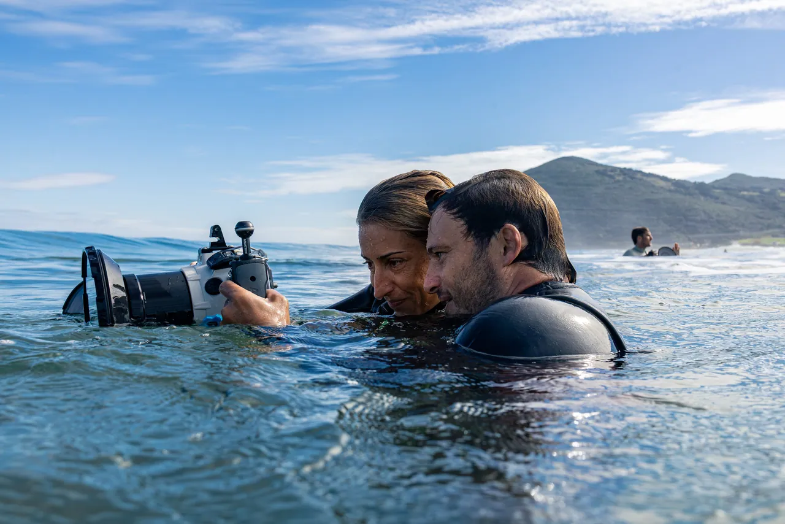

“The sea, once it casts its spell, holds one in its net of wonder forever.”
About me
Hi! I'm Rosa
The person behind the lens

I'm a surf and diving photographer. What started as filming friends in the line-up turned into a way of life: reading forecasts, waking up before sunrise and spending hours in the water waiting for the right moment.
Below the surface I found a different kind of quiet. Diving taught me patience and respect for the ocean — and that the best images come when you blend in rather than chase.
Today I work with surfers and divers who want honest, luminous images of their time in the sea.
My purpose
I want every image to carry what it feels like to be in the water: the light, the cold, the silence and the adrenaline.
Real moments
No poses: I look for the instant that tells your session as it was.
Respect for the sea
I photograph without disturbing marine life and following good diving practice.
Images that last
Photos you'll want to print and keep, not just post.
- Based in
- Spain
- In the water
- Surf · Scuba · Freediving
- Languages
- English · Español · Français